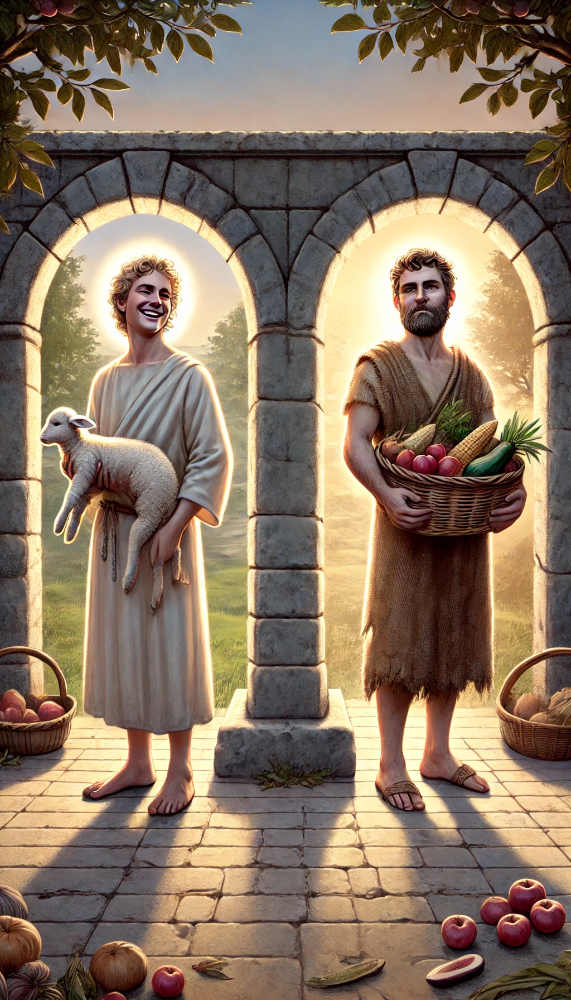
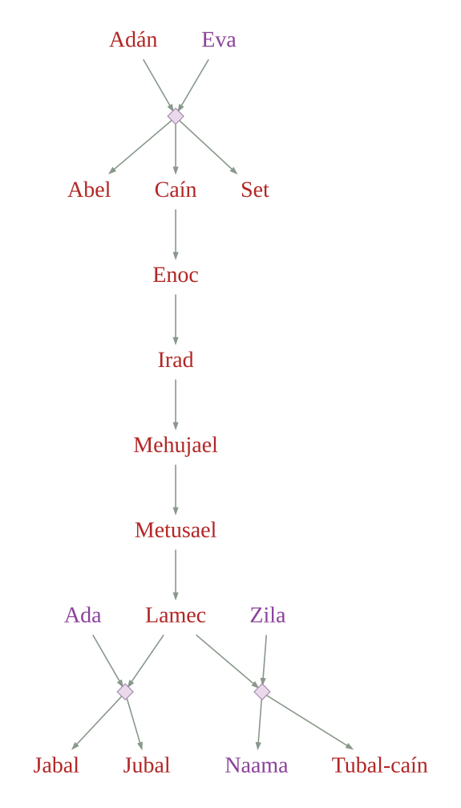
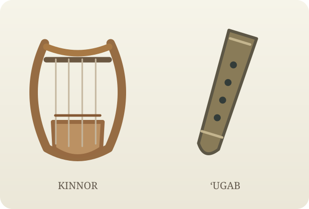

4:1 Conoció Adán a su mujer Eva, la cual concibió y dio a luz a Caín, y dijo: Por voluntad de Jehová he adquirido varón.23
4:2 Después dio a luz a su hermano Abel.24 Y Abel fue pastor de ovejas, y Caín fue labrador de la tierra.
4:3 Y aconteció andando el tiempo, que Caín trajo del fruto de la tierra una ofrenda a Jehová.
4:4 Y Abel trajo también de los primogénitos de sus ovejas, de lo más gordo de ellas. Y miró Jehová con agrado a Abel y a su ofrenda;
4:5 pero no miró con agrado a Caín y a la ofrenda suya.25 Y se ensañó Caín en gran manera, y decayó su semblante.
4:6 Entonces Jehová dijo a Caín: ¿Por qué te has ensañado, y por qué ha decaído tu semblante?
4:7 Si bien hicieres, ¿no serás enaltecido? y si no hicieres bien, el pecado está a la puerta; con todo esto, a ti será su deseo, y tú te enseñorearás de él.26
4:8 Y dijo Caín a su hermano Abel: Salgamos al campo. Y aconteció que estando ellos en el campo, Caín se levantó contra su hermano Abel, y lo mató.
4:9 Y Jehová dijo a Caín: ¿Dónde está Abel tu hermano? Y él respondió: No sé. ¿Soy yo acaso guarda de mi hermano?

4:10 Y él le dijo: ¿Qué has hecho? La voz de la sangre de tu hermano clama a mí desde la tierra.
4:11 Ahora, pues, maldito seas tú de la tierra, que abrió su boca para recibir de tu mano la sangre de tu hermano.
4:12 Cuando labres la tierra, no te volverá a dar su fuerza; errante y extranjero serás en la tierra.
4:13 Y dijo Caín a Jehová: Grande es mi castigo para ser soportado.
4:14 He aquí me echas hoy de la tierra, y de tu presencia me esconderé, y seré errante y extranjero en la tierra; y sucederá que cualquiera que me hallare, me matará.
4:15 Y le respondió Jehová: Ciertamente cualquiera que matare a Caín, siete veces será castigado. Entonces Jehová puso señal en Caín, para que no lo matase cualquiera que le hallara.
4:16 Salió, pues, Caín de delante de Jehová, y habitó en tierra de Nod27, al oriente de Edén.
4:17 Y conoció Caín a su mujer, la cual concibió y dio a luz a Enoc;28 y edificó una ciudad, y llamó el nombre de la ciudad del nombre de su hijo, Enoc.29
4:18 Y a Enoc le nació Irad,30 e Irad engendró a Mehujael,31 y Mehujael engendró a Metusael,32 y Metusael engendró a Lamec.
4:19 Y Lamec tomó para sí dos mujeres; el nombre de la una fue Ada,33 y el nombre de la otra, Zila,34
4:20 Y Ada dio a luz a Jabal, el cual fue padre de los que habitan en tiendas y crían ganados.35

4:21 Y el nombre de su hermano fue Jubal, el cual fue padre de todos los que tocan arpa y flauta.36

4:22 Y Zila también dio a luz a Tubal-caín,37 artífice de toda obra de bronce y de hierro; y la hermana de Tubal-caín fue Naama.38
4:23 Y dijo Lamec a sus mujeres: Ada y Zila, oíd mi voz; Mujeres de Lamec, escuchad mi dicho: Que un varón mataré por mi herida, Y un joven por mi golpe.
4:24 Si siete veces será vengado Caín, Lamec en verdad setenta veces siete lo será.39